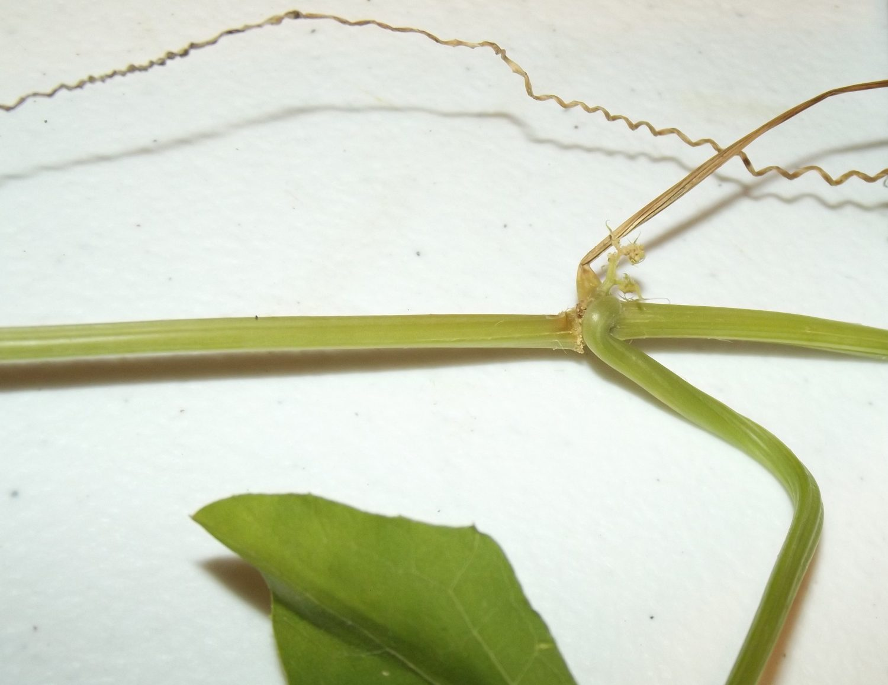
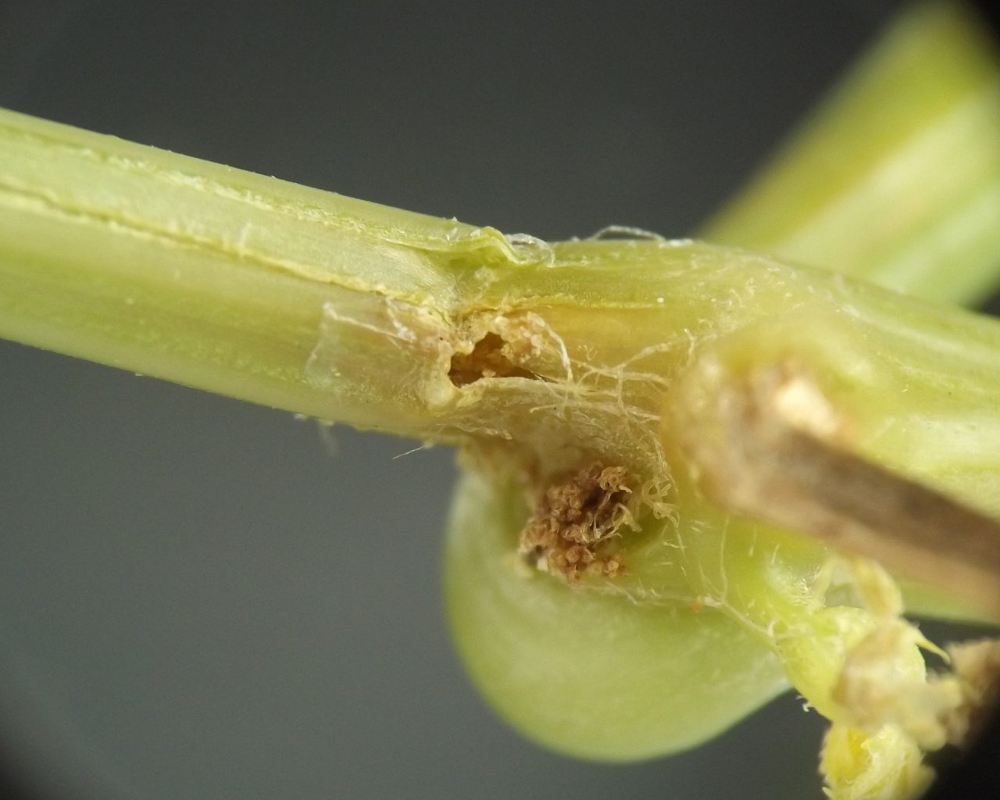
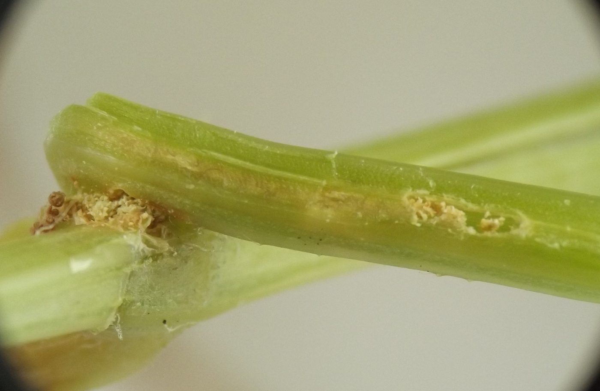
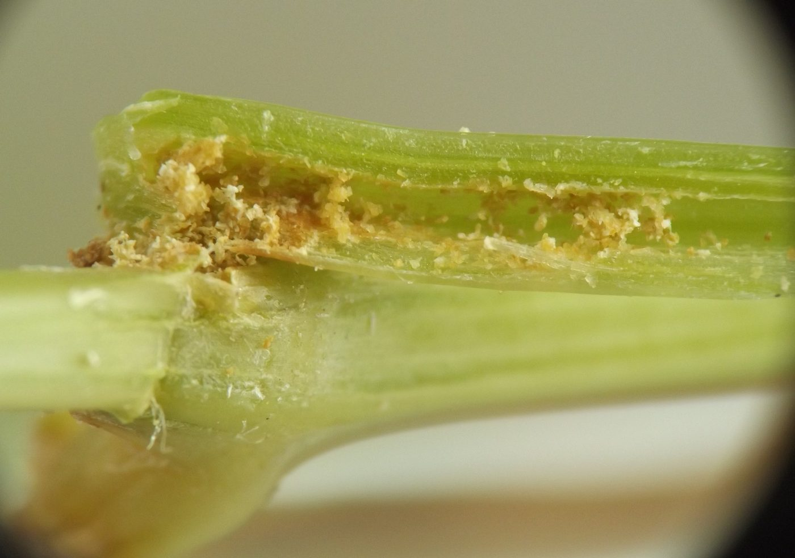
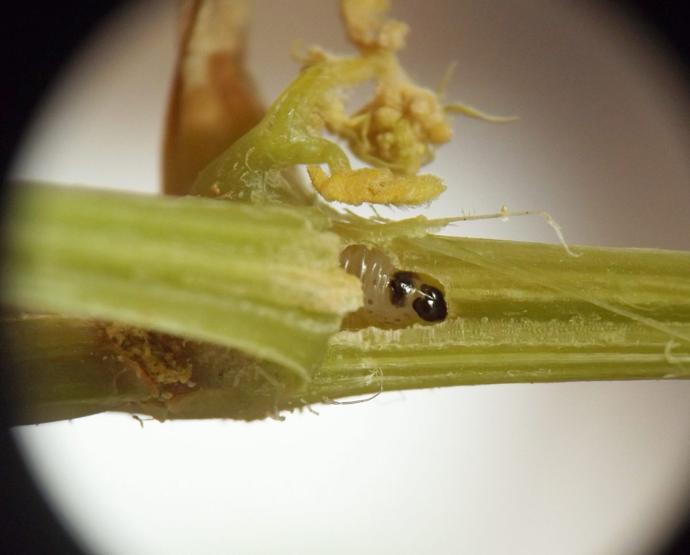
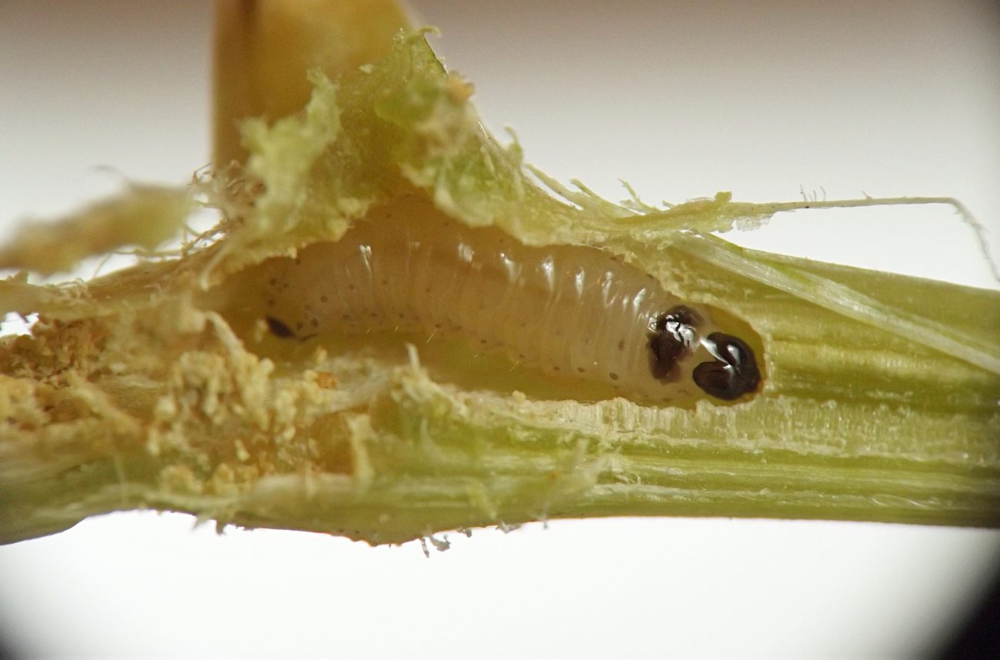
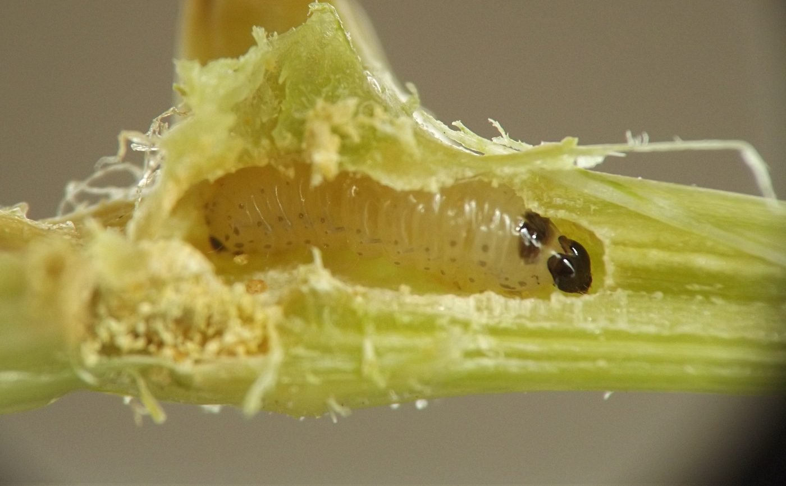
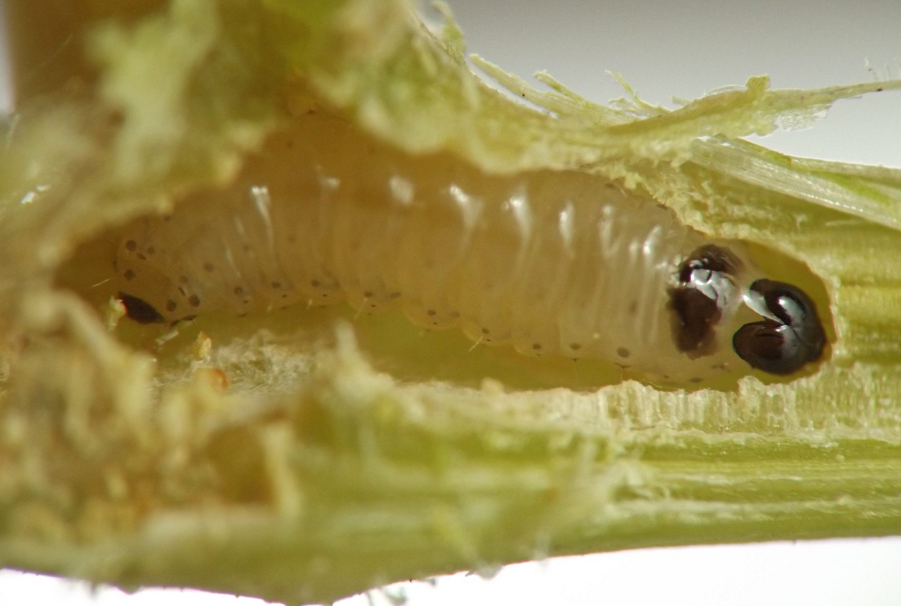
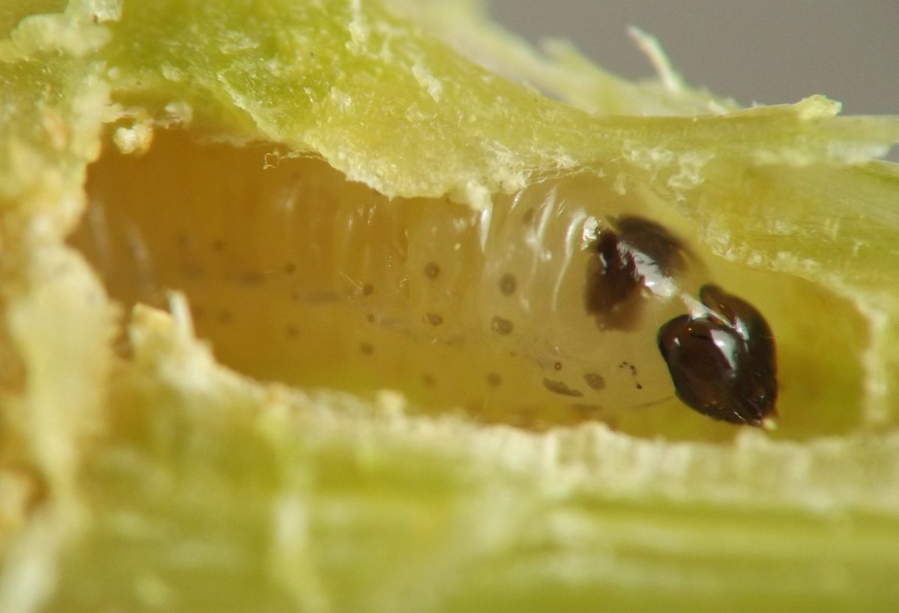

Stem borer (Lepidoptera) in Echinocystis
| Record no.: | 0205 |
|---|---|
| Feeding guild: | Stem borer |
| Taxonomy: | Lepidoptera: cf. Sesiidae: Eichlinia cucurbitae |
| Stages observed: | trace, larva |
| Distribution observed: | IA |
| Hosts in Echinocystis: | E. lobata (wild cucumber) |
I encountered a larva of this borer in a stem node of the host in mid-August 2021. The larva had tunneled in the adjoining petiole, leaving behind grains of light yellowish-brown frass, and the tendril emerging from the node had wilted.
The larva itself had a black head and prothoracic shield, along with small gray spots on the sides of its body segments and a dark gray or black terminal abdominal segment. These features, along with the host plant family, appeared consistent with what would be expected for a young larva of Eichlinia cucurbitae, based on the images or illustrations in Chittenden (1908), Coin et al. (2026), and University of Georgia - Center for Invasive Species and Ecosystem Health (2026). However, I was unable to confirm this identification with rearing, and it should be understood as tentative.


















- Chittenden, F.H. 1908. The squash-vine borer. (Melittia satyriniformis Hbn.). United States Department of Agriculture, Bureau of Entomology, Circular No. 38, second revision. Retrieved September 14, 2026 from http://www.biodiversitylibrary.org/page/41396519.[return to in-text citation]
- Coin, P., Moisset, B., McLeod, R., Gould, A., Quinn, M., Heiman, M., Eiseman, C.S., O'Connor, M., Hardy, R., Childs, K., Austin, K., and J. VanDyk (ed.). 2026. Species Eichlinia cucurbitae - Squash Vine Borer - Hodges#2536. Species information page at BugGuide.net. Retrieved September 14, 2026 from https://www.bugguide.net/node/view/11810.[return to in-text citation]
- University of Georgia - Center for Invasive Species and Ecosystem Health (ed.). 2026. Squash vine borer (Melittia cucurbitae (Harris)). Subject page at InsectImages.org. Retrieved September 14, 2026 from https://www.insectimages.org/browse/subject/8922?tab=view-images.[return to in-text citation]
Page created: October 2, 2026. Last update: none